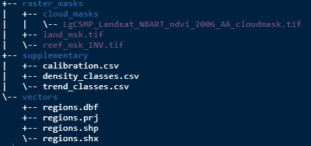
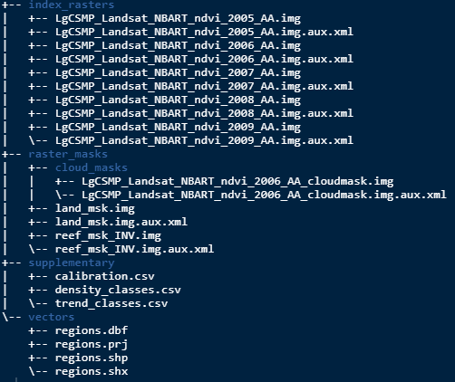

Purpose
The best way to get a handle on this package is to try it out with the example data. The following will guide you through putting the example data into the suggested Processing Folder directory.
Populate with data
At this point either fill the directories with the example data or if you are an old hand at this, use your own data. If using your own data you can skip this bit and start the next vignette.
So at this stage you have the folders setup and the is your working directory. Run the following code to save the example data to where it needs to be.
# Access internal dummy user data and write to sub-directories
make_example_data(p = ".")After running that your directories should look like this:

Example index data
Often the starting index raster data wouldn’t be stored within the
Processing Folder as it would be large and the result
of other processing steps, such as mosaicking. For the purposes of
demonstration, however, we will store the example index raster here.
Note the code below will also create a folder,
index_rasters/.
# Access internal dummy index data and write to sub-directory
make_index_rasters(p = ".")After running that your directories should look like this:

What have we got?
The index raster data is a small subset in area and time (2005-2009) from a monitoring program in Lalang-Garram Camden Sound Marine Park in the Kimberley region Western Australia.
NOTE on naming. Its always good to maintain a naming convention that shows the provenance of the imagery data. The name of the data used here for example indicates that the data is Landsat NBART, for the LgSCMP, it is NDVI, shows the year and that it is projected to Albers Australia.
There is both a land and a reef mask to suit as well as cloud mask for the 2006 index raster. The reef mask is an example of an inverse mask (more on this later).
In the supplementary directory is a calibration file (model coefficients) to transform the index to vegetation densities. There are also density and trend class files for classification.
Lastly there is a shape file in the vectors directory which gives boundaries for both a fictitious reporting region and some sites within it.